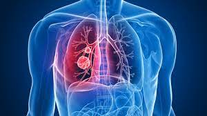
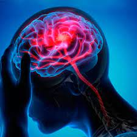
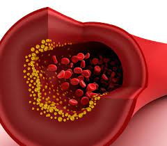
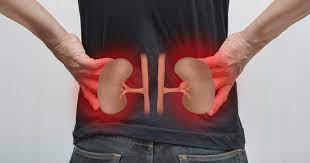
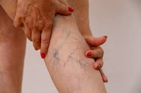

|
|
|
|
|
|
|
|---|
Las personas con secuelas del COVID pueden presentar una o varias afecciones. Las principales son:
1-PROBLEMAS DEL CORAZÓN
El COVID-19 afecta principalmente a los pulmones, pero también puede afectar a largo plazo a otros órganos;
uno de ellos es el corazón. A pesar que un paciente con esta enfermedad presenta síntomas leves. El doctor de la
Policlínica Metropolitana Pedro del Médico, indica que “puede tener alteración de la función cardíaca, como
consecuencia de la respuesta inflamatoria sistémica que produce la infección y ocasionalmente el virus produce
alteración directa sobre el tejido cardíaco”.
2-AFECCIÓN EN LOS PULMONES
en el caso de los pulmones que han sufrido de una neumonía relacionada con COVID-19 pueden tener daños duraderos
en los alvéolos de los pulmones y presentar problemas respiratorios a causa de las dificultades que genera la fibrosis
que ocurre por la infección viral.

3-CEREBRO
En el caso las consecuencias del COVID que se presentan en el cerebro, están: los accidentes cerebrovasculares,
convulsiones,parálisis temporal y el síndrome de Guillain-Barré.

4-PROBLEMAS EN LOS VASOS SANGUÍNEOS
Asimismo, en pacientes que han sido tratados por Sars-Cov-2 pueden tener problemas tanto en la coagulación de la sangre
como en los vasos sanguíneos.Según el doctor Pedro Del Medico “El Covid-19 actúa como una inflamación sistémica de los vasos
sanguíneos en múltiples órganos.A este tipo de problema si no se le hace el seguimiento y tratamiento adecuado puede traer
ataques cardíacos, accidentes cerebrovasculares,al igual que afectar a órganos como el hígado y los riñones”.

5-ALTERACIONES DERMATOLÓGICAS DEL COVID 19
Se han presentado diversas manifestaciones clínicas en la piel de los pacientes con Covid-19, en particular eritemas o rash
con o sin pústulas,urticaria o picazón, y en muy pocos casos lesiones necróticas en especial de los dedos de pie y manos
6-FATIGA CRÓNICA
La fatiga crónica es una de las consecuencias más comunes en las secuelas por COVID-19. Este es un trastorno complejo ya
que empeora con cualquier actividad física o mental que se realice y no se mejora con el descanso.

7-PROBLEMAS CON EL ESTADO DE ÁNIMO
El estado anímico de las personas que tuvieron síntomas graves por COVID-19 suele verse decaído. Sobre todo en los pacientes
que requirieron asistencia ventilatoria (respiradores mecánicos) o estuvieron en cuidados intensivos. En muchos casos pueden
desarrollar problemas de ansiedad,depresión y estrés postraumático.

8-CAÍDA DEL CABELLO
La caída del cabello es una de las consecuencias del COVID-19 más comunes que existen.Los especialistas la conocen como efluvio
telógeno que aparece semanas después de superar la enfermedad. En ocasiones no requiere de tratamiento para superar la enfermedad,
pero debe consultarse con su médico.

9-DAÑO EN LOS RIÑONES
Una de las secuelas que puede generar el coronavirus, es un daño en los riñones que puede variar según la gravedad con que se presenta
el Covid-19 en el paciente. En algunos casos la persona puede desarrollar una lesión renal aguda, que genera una disminución repentina de
la función renal, incluso si nunca antes han tenido enfermedad renal.

10-PÉRDIDA DE OLFATO
Uno de los síntomas comunes del coronavirus es la pérdida de olfato, lo cual junto a los otros padecimientos genera una alerta inmediata.
A pesar, de que el proceso de recuperación de esta patología sea en un período de 2 a 4 semanas, se han detectado pacientes que se prolonga este tiempo.
11-PROBLEMAS EN LAS VENAS
El doctor afirma “Las trombosis , especialmente las venosas, son una de las complicaciones graves que pueden aparecer en los pacientes con Covi-19,
presentándose como trombosis venosa profunda en las extremidades inferiores o bien como tromboembolismo pulmonar, casos que ameritan tratamiento
específico con medicamentos anticoagulantes”.

© Copyright:
derechos reservados
COFEPRIS 183300201A0829
sssscca
UNAM 845481
diseñado por kenia y guadalupe